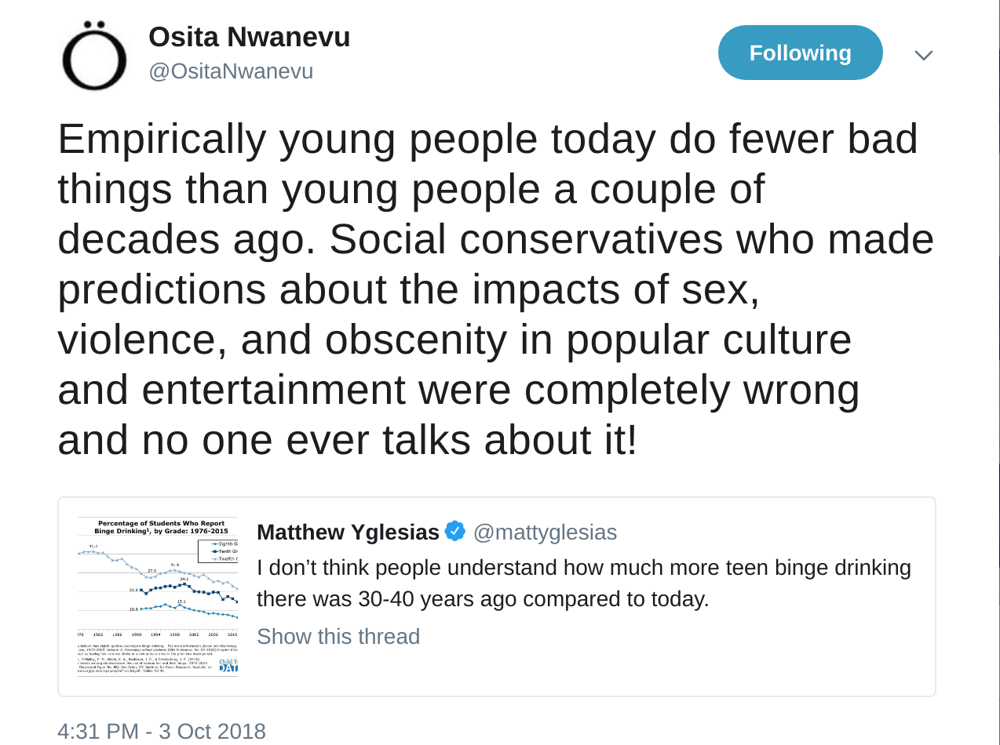

Teens are too busy watching shows on Netflix about young adults drinking, fighting, and having sex to do those things themselves.
For once I am glad to be wrong.
“Teens don’t binge drink anymore because they have no friends and never go outside” is some monkey’s paw shit
The only teens who have social lives now are the ones going to church.
Speaking as someone who is married to a teacher, participates in school activities on a volunteer basis, and regularly talks to teenagers (of the non-church-going, wholly-modern-and-secularized, helicopter-parented, upper-middle-class-and-going-prestigious-places variety): this is very false.
If you want to say that there’s been some kind of vague overall effect on socialization due to various technologies, well, we can look at the evidence for that…and then we can talk about whether or not it’s a bad thing if it’s true…but, c’mon, man, sweeping statements. I promise you, lots of teenagers of all stripes have social lives.